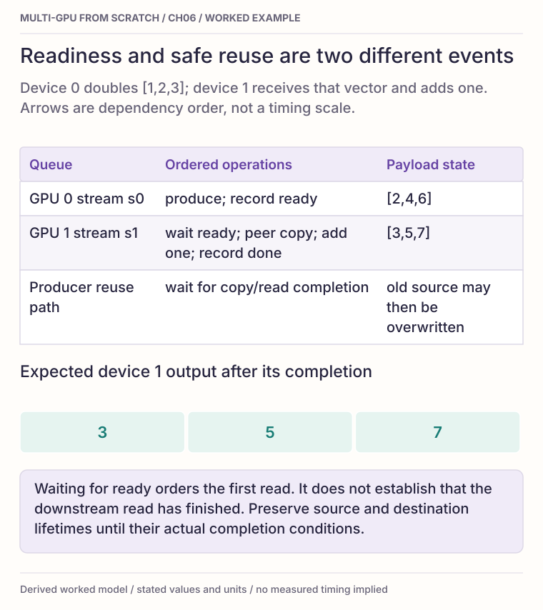

Chapter 6: Streams, Events, and Cross-Device Synchronization¶

What you will understand by the end of this chapter:
- What a CUDA event actually is -- a marker placed into a stream, not a timer that starts running the moment you create it -- and which calls on it block and which don't.
- Why
cudaStreamWaitEvent(), notcudaDeviceSynchronize(), is the real mechanism for making one device's work depend on another's, and why that distinction matters for how much concurrency a multi-GPU program keeps. - What the CUDA Runtime API can honestly report, right now, about whether a real device is even physically capable of overlapping a data transfer with kernel execution -- and why that capability has to exist before any amount of clever stream arrangement can produce overlap.
What you need to know first:
- Chapter 3's streams (creation, device binding, the multi-device loop pattern) and Chapter 5's transfer calls (
cudaMemcpyPeer(), the staged host fallback). - Chapter 3's per-thread current-device state and Chapter 2's topology models, referenced again here.
- No new CUDA concepts beyond this chapter's own two APIs (events, and the two device-attribute queries in Section 6.3).
Chapters 3 and 5 gave this book streams (an ordered queue of work bound to whichever device was current when the stream was created) and real cross-device copies. What's been missing is a way for work on one stream -- possibly on a different device entirely -- to depend on work in another stream, without forcing the host to stop and wait, and without forcing an entire device to drain before continuing. That's what events are for. This chapter builds the real dependency-tracking mechanism multi-GPU CUDA code actually uses, and closes with the one thing that has to be true about the hardware itself before any of it can produce real overlap: whether the device has an async copy engine and concurrent-kernel support at all.
Worked example — Separate producer readiness from buffer reuse¶
GPU 0 produces three int32 values and GPU 1 consumes them. Each buffer is 12 bytes. Use a producer stream s0, a consumer stream s1, and timing-disabled dependency events.

-
GPU 0 transforms [1, 2, 3] into [2, 4, 6] in s0, then records ready in that same stream.
-
GPU 1 enqueues cudaStreamWaitEvent(s1, ready, 0), followed by the supported peer copy into its own destination buffer.
-
GPU 1 adds one in s1, producing [3, 5, 7], and records done after the dependent work.
-
Before GPU 0 overwrites a source still read by an in-flight transfer, establish the corresponding copy-read completion dependency. Waiting until done is sufficient here, although it can be more conservative than necessary.
Expected result and pitfall. The expected result is [3, 5, 7]. cudaStreamWaitEvent can express a cross-device dependency; it does not make the host wait for device completion. Create and record events on their appropriate owning devices. Never infer readiness from host launch order alone.
Exercise. What race remains if the ready wait exists but GPU 0 immediately overwrites the source?
Worked answer. The copy can read the next generation instead of [2, 4, 6]. Readiness protects the consumer’s start; reuse needs a separate completion condition.
6.1 Events: Markers, Polling, and Completion¶

Intuition¶
An event is not a stopwatch you start -- it's a flag you plant at a specific point in a specific stream's queue of work. Planting the flag (cudaEventRecord()) doesn't pause anything; the stream keeps moving, and the flag simply becomes "reached" once every operation queued before it in that stream has actually finished. Everything interesting happens on the other side: something else -- another stream, or the host itself -- can ask "has that flag been reached yet?" either by polling (a quick, non-blocking check) or by genuinely waiting for it. Event creation and recording also have overhead. Disable timing for dependency-only events; waits can introduce further stalls.
Background¶
cudaEventCreate(&event) allocates the event object. cudaEventRecord(event, stream) places it into a specific stream's queue -- it enqueues a marker without waiting for that marker’s device completion; API calls may still block for internal resource management. Two different ways exist to ask whether it's been reached: cudaEventQuery(event), which checks once and returns immediately either way (cudaSuccess if reached, cudaErrorNotReady if not -- never blocking), and cudaEventSynchronize(event), which genuinely blocks the calling host thread until the event is reached. The CUDA Programming Guide describes exactly this pattern -- "By enqueuing an event into a stream directly after the first kernel, but before the second kernel, we can have either a CPU thread or another stream wait for this event to come to the front of the stream" -- which is precisely the query-vs-wait distinction this section's code exercises.
// Chapter 6: Streams, Events, and Cross-Device Synchronization
// 14_event_basics.cu
// Guard each lifecycle step; no-device diagnostics are not a GPU pass.
#include <cstdio>
#include <cuda_runtime.h>
static int failure(cudaError_t error) {
return error == cudaErrorNoDevice ||
error == cudaErrorInsufficientDriver
? 2
: 1;
}
int main() {
cudaStream_t stream = nullptr;
cudaError_t status = cudaStreamCreate(&stream);
printf("cudaStreamCreate: %s (code %d)\n",
cudaGetErrorString(status),
(int)status);
if (status != cudaSuccess)
return failure(status);
cudaEvent_t event = nullptr;
status = cudaEventCreate(&event);
printf("cudaEventCreate: %s (code %d)\n",
cudaGetErrorString(status),
(int)status);
if (status != cudaSuccess) {
cudaStreamDestroy(stream);
return failure(status);
}
status = cudaEventRecord(event, stream);
printf("cudaEventRecord(event, stream): %s (code %d)\n",
cudaGetErrorString(status),
(int)status);
int result = status == cudaSuccess ? 0 : failure(status);
if (result == 0) {
status = cudaEventQuery(event);
printf(
"cudaEventQuery(event) [non-blocking check]: %s (code %d)\n",
cudaGetErrorString(status),
(int)status);
if (status != cudaSuccess && status != cudaErrorNotReady)
result = failure(status);
}
if (result == 0) {
status = cudaEventSynchronize(event);
printf(
"cudaEventSynchronize(event) [blocking wait]: %s (code %d)\n",
cudaGetErrorString(status),
(int)status);
if (status != cudaSuccess)
result = failure(status);
}
if (cudaEventDestroy(event) != cudaSuccess)
result = 1;
if (cudaStreamDestroy(stream) != cudaSuccess)
result = 1;
return result;
}
Compiled and executed — 2026-11-18-h100: API validation (recorded scope). Hardware: 2 H100 GPUs. Executed UTC:
2026-11-18T11:20:58.486276+00:00.
Exact tested source · Compiler log · Execution log. Compile exit: 0; run exit: 0.
Commands below use local source/binary names; raw logs retain host paths. Execute in a scratch directory containing the downloaded source.
Sample output
cudaStreamCreate: no error (code 0)
cudaEventCreate: no error (code 0)
cudaEventRecord(event, stream): no error (code 0)
cudaEventQuery(event) [non-blocking check]: device not ready (code 600)
cudaEventSynchronize(event) [blocking wait]: no error (code 0)
Compiled and executed — 2026-11-17-a100: API validation (recorded scope). Hardware: 8 A100 GPUs. Executed UTC:
2026-11-18T00:00:47.396648+00:00.
Exact tested source · Compiler log · Execution log. Compile exit: 0; run exit: 0.
Commands below use local source/binary names; raw logs retain host paths. Execute in a scratch directory containing the downloaded source.
Sample output
cudaStreamCreate: no error (code 0)
cudaEventCreate: no error (code 0)
cudaEventRecord(event, stream): no error (code 0)
cudaEventQuery(event) [non-blocking check]: device not ready (code 600)
cudaEventSynchronize(event) [blocking wait]: no error (code 0)
Compiled and executed — 2026-11-17-h100: API validation (recorded scope). Hardware: 2 H100 GPUs. Execution record UTC (run-batch start; per-program time unrecorded):
2026-11-17T23:48:18.967387+00:00.
Exact tested source · Compiler log · Execution log. Compile exit: 0; run exit: 0.
Commands below use local source/binary names; raw logs retain host paths. Execute in a scratch directory containing the downloaded source.
Captured current-source output
The 2026-11-17 H100 execution record covers two GPUs connected by local NV18. It distinguishes numerical checks, API probes and other executions; a successful exit alone does not establish GPU algorithm correctness.
The event lifecycle checks creation, recording, querying and completion. cudaErrorNotReady is a normal query result for a pending event. Record the intended producer generation before enqueueing its consumer wait.
[COMMON TRAP] Assuming cudaEventRecord() captures a value, like a timestamp, at the moment it's called
cudaEventRecord(event, stream) does not record when the call happened on the host -- it inserts a marker into stream's queue that becomes "reached" only once every operation already queued ahead of it in that stream has finished executing on the device. If the stream already has ten seconds of queued kernels ahead of this call, the event doesn't become reached until all ten seconds have elapsed, no matter how quickly cudaEventRecord() itself returned to the host. Confusing "the call returned" with "the event fired" is exactly the mistake Section 6.2's cross-device dependency depends on you not making.
6.2 Cross-Device Synchronization: cudaStreamWaitEvent Across Devices¶

Intuition¶
Chapter 3 already showed that streams are bound to whichever device was current when they were created, and that the binding is enforced unevenly: a kernel launched into a stream owned by a device other than the current one fails, while a memory copy issued the same way succeeds. That asymmetry is why this chapter's cross-device code calls cudaSetDevice() for the owning device before issuing work to each device's stream, and why a copy that succeeds is never taken as proof the right stream was used. Events inherit that same binding -- an event recorded into a device-0 stream is fundamentally a device-0 marker. The useful trick is that the waiting side doesn't have to be on that same device: cudaStreamWaitEvent() lets a stream on device 1 wait on an event that was recorded on device 0, which is the real, direct mechanism for expressing "this specific piece of device 1's work depends on that specific piece of device 0's work" -- without forcing either device to fully drain, and without the host blocking at all.
Background¶
cudaStreamWaitEvent(stream, event, flags) makes all future work submitted to stream wait for event before it begins executing -- work already running, or already completed, in stream is unaffected. The documentation states this cross-device case explicitly: this synchronization "will be performed efficiently on the device," and "the event ... may be from a different context than stream, in which case this function will perform cross-device synchronization." That's the entire mechanism this section's code exercises: device 0 records an event marking a point in its own stream, and device 1's stream is told to wait on that exact marker before running anything queued after this call -- a targeted, single dependency, rather than the blunt alternative of calling cudaDeviceSynchronize() on device 0 and only then starting anything on device 1, which would needlessly stall device 1 behind all of device 0's work rather than just the one piece it actually depends on.
// Chapter 6: Streams, Events, and Cross-Device Synchronization
// 15_cross_device_wait.cu
// Two real devices, guarded handles, and a checked cross-device dependency.
#include <cstdio>
#include <cuda_runtime.h>
#define CHECK(call) \
do { \
cudaError_t status = (call); \
printf("%s: %s (code %d)\n", \
#call, \
cudaGetErrorString(status), \
(int)status); \
if (status != cudaSuccess) \
return status == cudaErrorNoDevice || \
status == cudaErrorInsufficientDriver \
? 2 \
: 1; \
} while (0)
int main() {
int count = 0;
CHECK(cudaGetDeviceCount(&count));
if (count < 2) {
printf("BLOCKED: requires 2 visible GPUs; found %d.\n",
count);
return 2;
}
cudaStream_t stream0 = nullptr, stream1 = nullptr;
cudaEvent_t event0 = nullptr;
CHECK(cudaSetDevice(0));
CHECK(cudaStreamCreate(&stream0));
CHECK(
cudaEventCreateWithFlags(&event0, cudaEventDisableTiming));
CHECK(cudaEventRecord(event0, stream0));
CHECK(cudaSetDevice(1));
CHECK(cudaStreamCreate(&stream1));
CHECK(cudaStreamWaitEvent(stream1, event0, 0));
printf(
"Cross-device wait enqueued; host did not wait for event completion.\n");
// Drain the waiter before releasing resources. This demo checks API success;
// it does not validate a producer/consumer payload or measure overlap.
CHECK(cudaStreamSynchronize(stream1));
CHECK(cudaStreamDestroy(stream1));
CHECK(cudaSetDevice(0));
CHECK(cudaEventDestroy(event0));
CHECK(cudaStreamDestroy(stream0));
printf(
"PASS: checked two-device event dependency lifecycle.\n");
return 0;
}
Compiled and executed — 2026-11-18-h100: API validation (recorded scope). Hardware: 2 H100 GPUs. Executed UTC:
2026-11-18T11:20:59.517181+00:00.
Exact tested source · Compiler log · Execution log. Compile exit: 0; run exit: 0.
Commands below use local source/binary names; raw logs retain host paths. Execute in a scratch directory containing the downloaded source.
Sample output
cudaGetDeviceCount(&count): no error (code 0)
cudaSetDevice(0): no error (code 0)
cudaStreamCreate(&stream0): no error (code 0)
cudaEventCreateWithFlags(&event0, cudaEventDisableTiming): no error (code 0)
cudaEventRecord(event0, stream0): no error (code 0)
cudaSetDevice(1): no error (code 0)
cudaStreamCreate(&stream1): no error (code 0)
cudaStreamWaitEvent(stream1, event0, 0): no error (code 0)
Cross-device wait enqueued; host did not wait for event completion.
cudaStreamSynchronize(stream1): no error (code 0)
cudaStreamDestroy(stream1): no error (code 0)
cudaSetDevice(0): no error (code 0)
cudaEventDestroy(event0): no error (code 0)
cudaStreamDestroy(stream0): no error (code 0)
PASS: checked two-device event dependency lifecycle.
Compiled and executed — 2026-11-17-a100: API validation (recorded scope). Hardware: 8 A100 GPUs. Executed UTC:
2026-11-18T00:00:51.487103+00:00.
Exact tested source · Compiler log · Execution log. Compile exit: 0; run exit: 0.
Commands below use local source/binary names; raw logs retain host paths. Execute in a scratch directory containing the downloaded source.
Sample output
cudaGetDeviceCount(&count): no error (code 0)
cudaSetDevice(0): no error (code 0)
cudaStreamCreate(&stream0): no error (code 0)
cudaEventCreateWithFlags(&event0, cudaEventDisableTiming): no error (code 0)
cudaEventRecord(event0, stream0): no error (code 0)
cudaSetDevice(1): no error (code 0)
cudaStreamCreate(&stream1): no error (code 0)
cudaStreamWaitEvent(stream1, event0, 0): no error (code 0)
Cross-device wait enqueued; host did not wait for event completion.
cudaStreamSynchronize(stream1): no error (code 0)
cudaStreamDestroy(stream1): no error (code 0)
cudaSetDevice(0): no error (code 0)
cudaEventDestroy(event0): no error (code 0)
cudaStreamDestroy(stream0): no error (code 0)
PASS: checked two-device event dependency lifecycle.
Compiled and executed — 2026-11-17-h100: API validation (recorded scope). Hardware: 2 H100 GPUs. Execution record UTC (run-batch start; per-program time unrecorded):
2026-11-17T23:48:18.967387+00:00.
Exact tested source · Compiler log · Execution log. Compile exit: 0; run exit: 0.
Commands below use local source/binary names; raw logs retain host paths. Execute in a scratch directory containing the downloaded source.
Captured current-source output
cudaGetDeviceCount(&count): no error (code 0)
cudaSetDevice(0): no error (code 0)
cudaStreamCreate(&stream0): no error (code 0)
cudaEventCreateWithFlags(&event0, cudaEventDisableTiming): no error (code 0)
cudaEventRecord(event0, stream0): no error (code 0)
cudaSetDevice(1): no error (code 0)
cudaStreamCreate(&stream1): no error (code 0)
cudaStreamWaitEvent(stream1, event0, 0): no error (code 0)
Cross-device wait enqueued; host did not wait for event completion.
cudaStreamSynchronize(stream1): no error (code 0)
cudaStreamDestroy(stream1): no error (code 0)
cudaSetDevice(0): no error (code 0)
cudaEventDestroy(event0): no error (code 0)
cudaStreamDestroy(stream0): no error (code 0)
PASS: checked two-device event dependency lifecycle.
The 2026-11-17 H100 execution record covers two GPUs connected by local NV18. It distinguishes numerical checks, API probes and other executions; a successful exit alone does not establish GPU algorithm correctness.
the recorded execution shows prerequisite failures only. The current source checks two-device availability, never uses a failed creation’s handle, and drains the waiting stream before releasing resources. Its eventual success would establish an API lifecycle, not payload correctness or measured overlap.
[COMMON TRAP] Reaching for cudaDeviceSynchronize() as the 'safe' way to coordinate across devices
cudaDeviceSynchronize() blocks the host until every piece of work already queued on the current device has completed -- not just the one operation another device's stream actually depends on. Using it to coordinate devices (device 0 synchronize, then start device 1's dependent work) is correct but needlessly serializing: it throws away any concurrency device 0 could have kept running on other, unrelated streams while device 1's dependent work began. cudaStreamWaitEvent() expresses the actual dependency -- one specific point in one specific stream -- and lets everything else keep moving.
6.3 Overlapping Transfer and Compute: What the Runtime Can Honestly Report¶
Intuition¶
Sections 6.1 and 6.2 gave this book the mechanism for expressing dependencies without unnecessary blocking. But a dependency graph that's free of unnecessary blocking still only produces real overlap -- a transfer genuinely running at the same time as a kernel -- if the underlying hardware has a physically separate engine to run the copy on while the compute engine keeps executing the kernel. That's not a software arrangement; it's a fact about the specific GPU, and the CUDA Runtime API can report it honestly, right now, without needing a real transfer or kernel to actually run.
Background¶
Two device properties answer this directly. asyncEngineCount, per the CUDA Runtime API's own cudaDeviceProp struct reference, is simply the "Number of asynchronous engines" -- the count of hardware copy engines that can move data independently of, and concurrently with, the engine executing kernels; a value of zero reports no support for the conventional asynchronous copy-engine/kernel overlap considered here. This does not classify every possible SM-initiated memory-access or communication mechanism. concurrentKernels reports whether the "Device can possibly execute multiple kernels concurrently" -- a separate capability from copy/kernel overlap, and a per-device one: it says whether kernels issued to different streams on that one device can run at the same time. Different devices have separate compute hardware, but explicit dependencies and shared host/network resources can still couple their progress; this attribute is about sharing within one device. Both are queryable two ways: cudaDeviceGetAttribute() for a single value, or cudaGetDeviceProperties() for the full struct at once. Chapter 5's Asynchronous Execution citation already established pinned host memory for host/device transfer overlap. That requirement does not apply to a transfer wholly between device allocations. concurrentKernels describes kernel/kernel overlap, not a prerequisite for copy/kernel overlap. Stream arrangement, transfer type and actual scheduling still determine whether overlap occurs.
The 2026-11-17 H100 execution record covers two GPUs connected by local NV18. It distinguishes numerical checks, API probes and other executions; a successful exit alone does not establish GPU algorithm correctness.
// 16_overlap_query.cu
// Capability query only: no measured overlap or throughput claim.
#include <cstdio>
#include <cuda_runtime.h>
int main() {
int count = 0;
if (cudaGetDeviceCount(&count) != cudaSuccess || count < 1)
return 2;
int engines = -1, kernels = -1, errors = 0;
if (cudaDeviceGetAttribute(&engines,
cudaDevAttrAsyncEngineCount,
0) != cudaSuccess)
++errors;
if (cudaDeviceGetAttribute(&kernels,
cudaDevAttrConcurrentKernels,
0) != cudaSuccess)
++errors;
cudaDeviceProp properties{};
if (cudaGetDeviceProperties(&properties, 0) != cudaSuccess)
++errors;
if (engines < 0 || engines != properties.asyncEngineCount ||
kernels != properties.concurrentKernels)
++errors;
printf("device 0: asyncEngineCount=%d concurrentKernels=%d\n",
engines,
kernels);
printf(
"API PROBE %s: capability queries only, no overlap benchmark, errors=%d\n",
errors ? "FAIL" : "PASS",
errors);
return errors ? 1 : 0;
}
Compiled and executed — 2026-11-18-h100: API validation (recorded scope). Hardware: 2 H100 GPUs. Executed UTC:
2026-11-18T11:21:00.798896+00:00.
Exact tested source · Compiler log · Execution log. Compile exit: 0; run exit: 0.
Commands below use local source/binary names; raw logs retain host paths. Execute in a scratch directory containing the downloaded source.
Sample output
device 0: asyncEngineCount=3 concurrentKernels=1
API PROBE PASS: capability queries only, no overlap benchmark, errors=0
Compiled and executed — 2026-11-17-a100: API validation (recorded scope). Hardware: 8 A100 GPUs. Executed UTC:
2026-11-18T00:00:55.930844+00:00.
Exact tested source · Compiler log · Execution log. Compile exit: 0; run exit: 0.
Commands below use local source/binary names; raw logs retain host paths. Execute in a scratch directory containing the downloaded source.
Sample output
device 0: asyncEngineCount=3 concurrentKernels=1
API PROBE PASS: capability queries only, no overlap benchmark, errors=0
Compiled and executed — 2026-11-17-h100: API validation (recorded scope). Hardware: 2 H100 GPUs. Executed UTC:
2026-11-17T23:51:12.641215+00:00.
Exact tested source · Compiler log · Execution log. Compile exit: 0; run exit: 0.
Commands below use local source/binary names; raw logs retain host paths. Execute in a scratch directory containing the downloaded source.
Captured current-source output
File 16 checks overlap capability queries against the device properties reported by the current H100 driver. This API-probe pass does not measure achieved copy/compute overlap or guarantee that an arbitrary stream schedule overlaps.
The 2026-11-17 H100 execution record covers two GPUs connected by local NV18. It distinguishes numerical checks, API probes and other executions; a successful exit alone does not establish GPU algorithm correctness.
[COMMON TRAP] Assuming separate streams guarantee overlap
Independent stream order permits concurrency; it does not prove it occurred. For the conventional host/device copy-engine path, use suitable pinned host storage and query the device's asynchronous-copy capability. Shared resources and dependencies may still serialize work. Legacy default-stream synchronization can introduce additional ordering, while per-thread default streams and streams created with cudaStreamNonBlocking have different rules. concurrentKernels concerns kernel/kernel concurrency and is not an additional prerequisite for copy/kernel overlap. See CUDA's stream and asynchronous-execution rules.
Chapter Summary¶
Events mark completion points in streams. cudaEventQuery() polls them, cudaEventSynchronize() waits on the host, and cudaStreamWaitEvent() establishes a targeted stream dependency, including across devices. Overlap additionally depends on hardware and workload scheduling. Chapter 7 extends memory and event sharing across processes.
Self-Check Questions¶
- Section 6.1's Common Trap warns against confusing "the call returned" with "the event fired." Using the code in that section, identify exactly which line returns immediately regardless of stream state, and which line's return is what actually reflects the event having been reached.
cudaEventQuery()andcudaEventSynchronize()both ask "has this event been reached?" What is the behavioral difference between them when the answer is currently "no"?- Section 6.2's code calls
cudaStreamWaitEvent(stream1, event0, 0)whereevent0was recorded on device 0's stream andstream1belongs to device 1. Quote the specific documented behavior that makes this cross-device call legal, rather than an error. - A programmer replaces Section 6.2's
cudaStreamWaitEvent()call withcudaSetDevice(0); cudaDeviceSynchronize();immediately before starting device 1's dependent work. Explain concretely what this change costs, using the definition ofcudaDeviceSynchronize()from Section 6.2's Common Trap. - Why do separate streams alone not establish that a conventional asynchronous host/device copy overlaps a kernel, even after checking device capabilities?
- For this chapter's conventional host/device asynchronous-copy pattern, which memory, ordering and hardware conditions permit overlap, and why must actual overlap still be measured?
- Why must overlap capabilities be queried from the actual device, and why does a successful capability probe not measure achieved overlap?
- Suppose a future chapter needs device 1's kernel to depend on TWO separate pieces of device 0's work, completed at different points in device 0's stream. Based on this chapter's model, would that require one event or two? Explain.
Where We Go Next¶
Chapter 7 extends synchronization and shared memory access beyond a single process entirely: CUDA's Inter-Process Communication (IPC) support for sharing device memory allocations and events across separate host processes, and what changes about the ownership and lifetime guarantees this book has relied on so far once "another device" becomes "another device, owned by another process."
Worked Solutions¶
1. cudaEventRecord(event, stream) is the line that returns immediately regardless of stream state -- it only inserts the marker, and per Section 6.1's own reasoning, does not wait for anything queued ahead of it. cudaEventSynchronize(event) is the line whose return actually reflects the event having been reached -- it genuinely blocks the host thread until that marker is confirmed reached, so by the time it returns, everything queued in that stream ahead of the marker has genuinely finished.
2. cudaEventQuery() returns immediately either way -- cudaErrorNotReady if the event hasn't been reached yet, without waiting even a moment longer. cudaEventSynchronize() instead blocks the calling host thread, not returning at all until the event genuinely has been reached -- it trades an immediate answer for a guaranteed one.
3. The documentation states that cudaStreamWaitEvent()'s synchronization "will be performed efficiently on the device," and explicitly that "the event ... may be from a different context than stream, in which case this function will perform cross-device synchronization." This is the specific, documented behavior that makes an event from device 0 legal to hand to a stream on device 1 -- the function is designed for exactly this case, not merely tolerating it as an edge case.
4. cudaDeviceSynchronize() on device 0 blocks the host until every piece of work already queued on device 0 has completed -- not just the specific event device 1's work actually depends on. If device 0 has other, unrelated streams with their own queued work, this change forces the host to wait for all of that unrelated work to finish too, before device 1's dependent work can even begin, throwing away concurrency that cudaStreamWaitEvent()'s single, targeted dependency would have preserved.
5. Separate queues remove an ordering obstacle only when their actual stream semantics and dependencies allow independent execution. They do not add copy-engine capability, eliminate shared-resource contention or force simultaneous scheduling. For the conventional host/device path, check asynchronous-copy support and the pinned-buffer contract, then measure the stream timeline. This is distinct from SM-initiated copies or other communication mechanisms, whose execution resources and ordering must be analyzed separately.
6. For the conventional asynchronous host/device transfer-and-kernel pattern described here, use suitable pinned host memory, independent stream ordering and hardware supporting concurrent copying/execution. Check for dependencies and resource contention, then measure actual overlap. Separate explicit streams are the straightforward teaching pattern; “both must be non-default” is not a universal CUDA rule, because per-thread default-stream and nonblocking-stream semantics differ from legacy NULL-stream synchronization. A wholly device-to-device transfer has no host buffer to pin. Capability queries and successful API returns remain distinct from an overlap measurement.
7. Report the actual capability queries and their statuses instead of guessing device properties. File 16’s current H100 API probe compares attribute and property results. This establishes reported capabilities, not achieved asynchronous overlap.
8. One event. Both pieces of work are in device 0's single stream, and a stream executes in order, so recording one event right after the later of the two pieces marks a point that can only be reached once both pieces have finished. Handing that one event to cudaStreamWaitEvent() on device 1's stream covers both dependencies. Two events (each with its own cudaStreamWaitEvent() call) become necessary only if the two pieces are on different streams on device 0, since then neither one's completion implies the other's.
Sources cited in this chapter:
- CUDA Programming Guide — Asynchronous Execution -- the default (NULL) stream's blocking-stream serialization behavior; using an event so "either a CPU thread or another stream" can wait for a point in a stream's progress.
- cudaStreamWaitEvent — NVIDIA CUDA Runtime API -- the exact documented cross-device behavior: "the event may be from a different context than stream, in which case this function will perform cross-device synchronization."
- CUDA Runtime API Reference —
cudaDevicePropstruct -- theasyncEngineCount("Number of asynchronous engines") andconcurrentKernels("Device can possibly execute multiple kernels concurrently") field descriptions. - Chapter 5 of this book ("Explicit Transfers: cudaMemcpyPeer, Staged Host Transfers, and When Each Wins") -- the pinned-memory requirement for genuine transfer asynchrony, reused here as one of the three simultaneous conditions for real transfer/kernel overlap.